MiguelCS · ASIR · Sistemas y Redes
En esta práctica se configura SNAT dinámico (NAT dinámico con pool de direcciones públicas) para permitir que varias redes privadas accedan a un servidor externo. El router R2 actúa como frontera entre la red privada (172.16.0.0/16) y la red pública.
Se utiliza un pool de únicamente 2 IP públicas, por lo que se demuestra el comportamiento real del NAT cuando el pool se ocupa, y cómo se recupera tras limpiar la tabla NAT.
Conceptos clave:
Se carga el fichero base proporcionado en Packet Tracer y se verifica que la topología coincide con el escenario del ejercicio (R1 como router interno, R2 como router frontera con salida a red pública y un servidor externo).
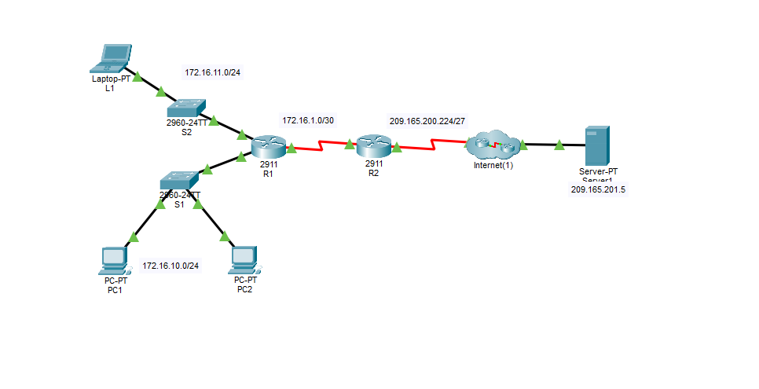
Topología inicial (escenario base del ejercicio).
Antes de configurar NAT en R2, se prueba desde PC1 el acceso al servidor externo (http://209.165.201.5). El acceso falla porque los hosts internos no pueden traducir su IP privada a una IP pública y, por tanto, no existe conectividad válida hacia la red externa.
Objetivo: demostrar el estado inicial “sin NAT” (requisito del ejercicio).
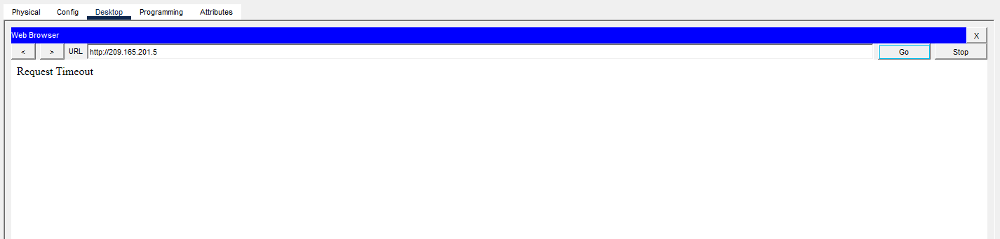
Acceso web fallido antes de configurar SNAT.
Se comprueba que no existen traducciones activas y que la configuración NAT aún no está aplicada.
Comandos típicos de verificación:
show ip nat translationsshow ip nat statisticsshow running-config | include nat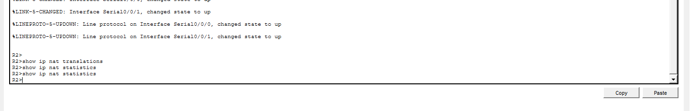
Tabla NAT y configuración NAT vacías antes de la configuración.
Se configura NAT dinámico en R2 siguiendo el esquema:
Comandos aplicados (resumen):
access-list 1 permit 172.16.0.0 0.0.255.255
ip nat pool NATPOOL 209.165.200.229 209.165.200.230 netmask 255.255.255.252
ip nat inside source list 1 pool NATPOOL
interface s0/0/1 → ip nat inside
interface s0/0/0 → ip nat outside
Por qué es crítico: si las interfaces inside/outside están invertidas o no se marcan, el NAT no se aplicará aunque exista el pool.
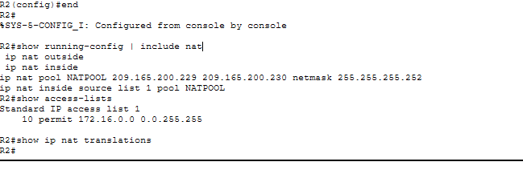
Configuración NAT aplicada y ACL verificada.
Se realizan accesos HTTP al servidor externo (http://209.165.201.5) desde distintos hosts internos. Tras cada prueba se consulta la tabla NAT con show ip nat translations para observar la asignación de IP públicas del pool.
Interpretación esperada:
Nota técnica: es normal que aparezcan múltiples entradas TCP para un mismo host porque un navegador abre varias conexiones simultáneas (distintos puertos origen).
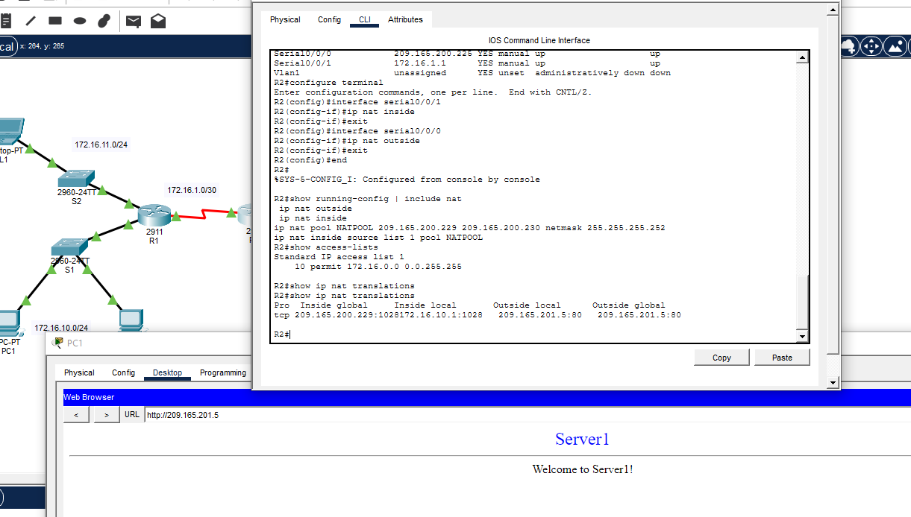
Prueba 1 (host interno) y tabla NAT asociada.
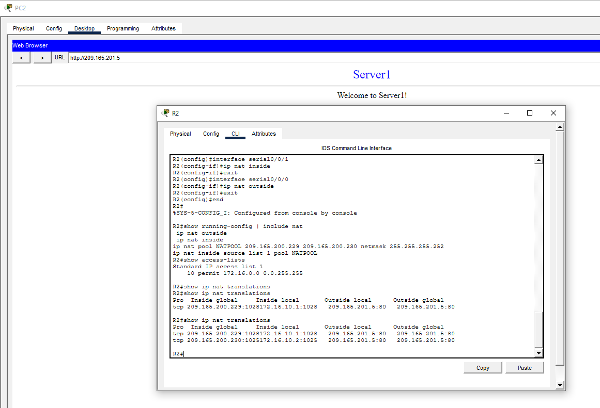
Prueba 2 (segundo host) y consumo de la segunda IP del pool.
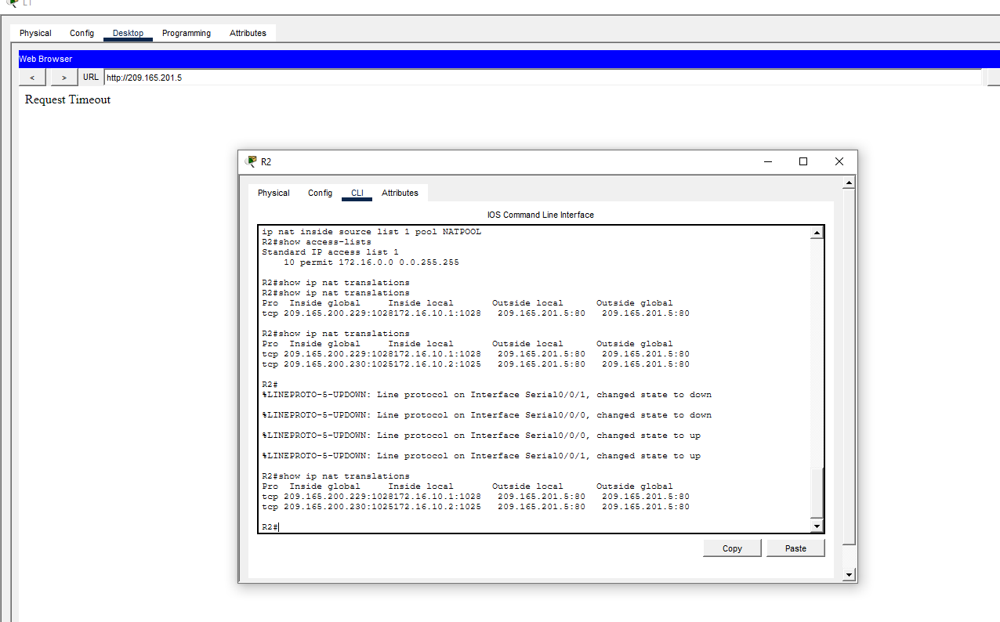
Prueba 3 (tercer host) – comportamiento según disponibilidad del pool.
Se observa la tabla NAT con traducciones activas. La columna Inside local identifica el host interno y Inside global la IP pública asignada desde el pool. Los diferentes puertos (source ports) reflejan múltiples sesiones TCP.
Lectura técnica: el router está realizando SNAT cambiando la IP origen y manteniendo el destino (servidor 209.165.201.5:80), permitiendo acceso desde redes privadas a una red pública.
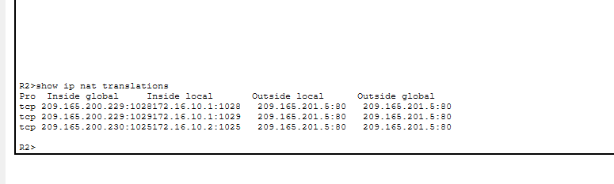
Tabla NAT con traducciones activas (múltiples sesiones TCP).
Para liberar el pool y simular la expiración/cierre de sesiones, se eliminan las traducciones activas del router mediante:
clear ip nat translation *
Tras ello, show ip nat translations debe mostrarse vacío, confirmando que no quedan traducciones ocupando las IP públicas del pool.
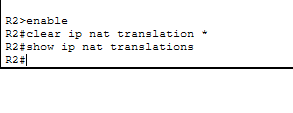
Tabla NAT limpia tras ejecutar clear ip nat translation *.
Se repite el acceso HTTP desde un host interno (por ejemplo L1). Al estar el pool liberado, R2 asigna de nuevo una IP pública del pool al host que genera el tráfico. Se verifica con show ip nat translations que aparecen nuevas entradas asociadas al host.
Qué se demuestra: el pool vuelve a estar disponible y el NAT dinámico reasigna IP públicas en función de la demanda.
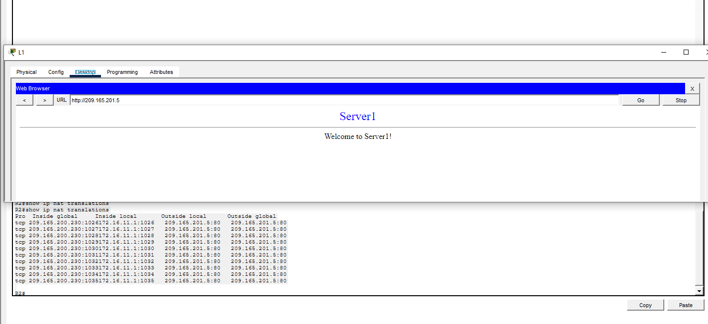
Nuevas traducciones NAT creadas tras liberar el pool.
Se guarda el fichero .pkt final con la práctica completamente funcional para su entrega.
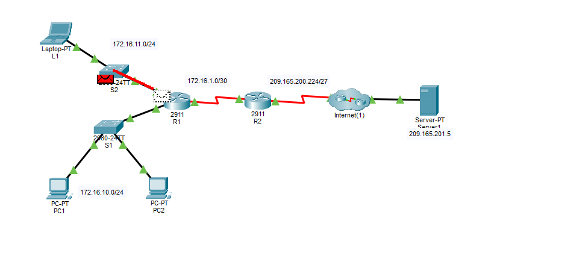
Guardado final del Packet Tracer (.pkt) listo para entregar.
La práctica valida el funcionamiento del SNAT dinámico con pool en Cisco, permitiendo que hosts internos con direcciones privadas accedan a un servicio externo mediante traducción de la IP origen. El uso de un pool limitado de 2 IP públicas permite observar un comportamiento realista: cuando el pool está ocupado, nuevos hosts pueden no obtener traducción, y al liberar la tabla NAT (o expirar sesiones) las direcciones vuelven a estar disponibles.
Finalmente se comprueba que la tabla NAT refleja correctamente la relación entre Inside local e Inside global y que múltiples conexiones TCP generan múltiples entradas con distintos puertos, comportamiento habitual en tráfico HTTP.